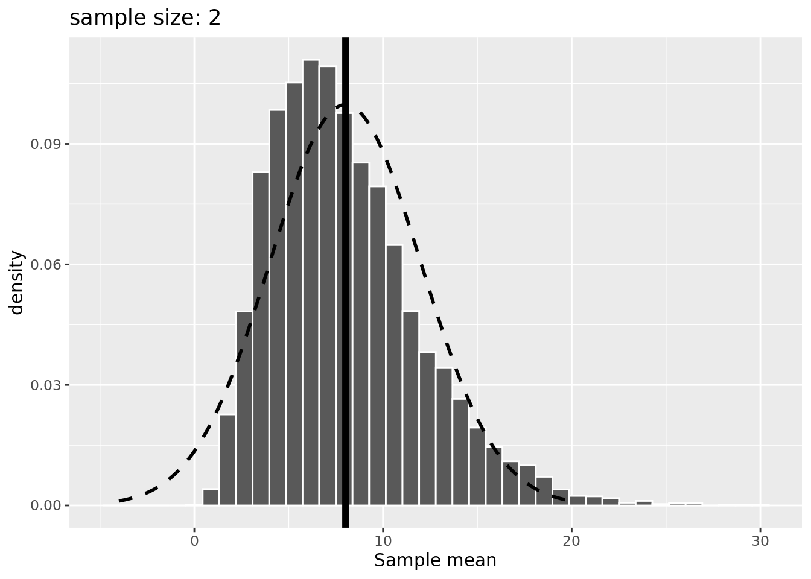
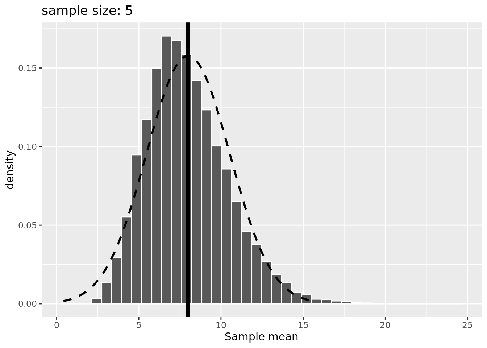
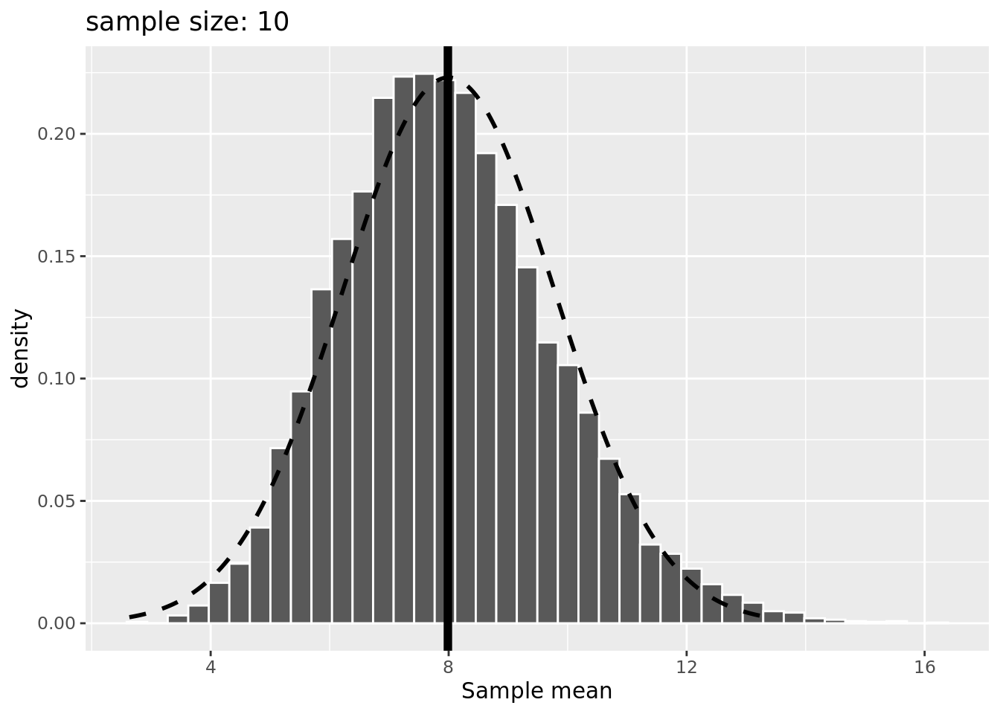
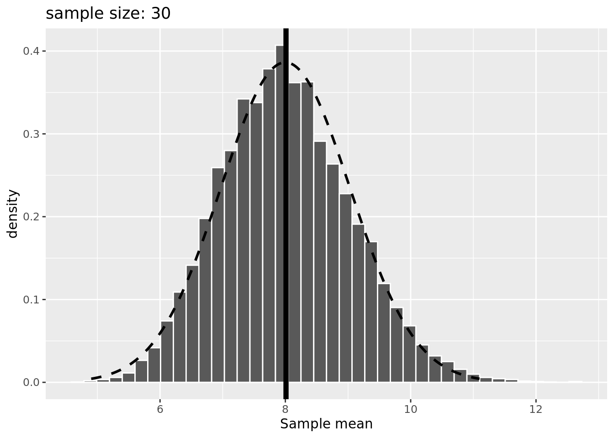

中心極限定理
大数の(弱)法則
定理
標本\(x_{1}, x_{2}, \cdots\)が全て独立かつ同一の母集団分布に従うとし、\(E(x_{i}) = \mu \ (i = 1, 2, \cdots)\)とする。このとき、 Equation 1 が成り立つことを大数の(弱)法則と呼ぶ(\(\bar{x}\)は\(\mu\)に確率収束する)。
\[ \forall \epsilon > 0, n \rightarrow \infty \Rightarrow P \{ |\bar{x} - \mu | > \epsilon \} \tag{1}\]
これは、サンプルサイズ\(n\)を増やしていくことで標本平均は真の平均\(\mu\)に近似するということである。確率分布については仮定していないというのが重要な点で、正規分布はもちろん指数分布などの左右非対称なものでも大数の法則を適応することができる。
シミュレーション
大数の法則をRでシミュレーションする。サイコロを一回振り、2以下の目が出た場合は1、それ以外の目が出た場合は0とするベルヌーイ試行を考える。このとき、2以下の目が出る確率は\(\frac{1}{3}\)であることが期待できるため、母集団分布を平均も\(\frac{1}{3}\)となる。この試行をたくさん繰り返すときに実際の標本平均\(\bar{x}\)はどこに収束するかを確認する。
この場合、シミュレーションを5回行った結果は Figure 1 になる。いずれのシミュレーションでも200回目までの試行はややばらつきがあるようにみえるが、それ以降は\(\frac{1}{3}\)に収束しているとみてよいだろう。
Code
dice_sample <- function(seed = 0, iter = 10000) {
set.seed(seed)
logs <- rep(0, length = iter)
for (i in 1:iter){
dices <- as.integer(runif(i, 1, 7))
logs[i] <- ifelse(dices <= 2, 1, 0) |> mean()
}
return(logs)
}
iter = 1000
x <- 1:iter
data <- tibble()
for (i in 0:4){
sub_data <- tibble(
x = x,
y = dice_sample(seed = i, iter = iter),
simulation = sprintf("%s", i)
)
data <- rbind(data, sub_data)
}
g <- ggplot(data, aes(x = x, y = y, color = simulation)) +
geom_line(alpha = 0.4) +
geom_hline(yintercept = 1 / 3) +
ylim(0, 1) +
labs(x = "Sample size", y = "Sample mean")
plot(g)中心極限定理
定理
大数の法則について、標本平均による母数\((\mu, \sigma^{2})\)の点推定の考え方を適応する。
標本\(x_{1}, x_{2}, \cdots\)が全て独立かつ同一の母集団分布に従うとし、\(E(x_{i}) = \mu, V(x_{i}) = \sigma^{2} \ (i = 1, 2, \cdots)\)とする。このとき、 Equation 2 が成り立つことを中心極限定理と呼ぶ。
\[ n \rightarrow \infty \Rightarrow P \left( \frac{x_{1} + \cdots + x_{n} - n \mu}{\sqrt{n} \sigma} \leqq x \right) \rightarrow \int^{x}_{- \infty} \frac{1}{\sqrt{2 \pi}} \exp \left( - \frac{x^{2}}{x} \right) dx \tag{2}\]
即ち、サンプルサイズ\(n\)を増やしていくことで確率変数\(\frac{X_{1} + \cdots + X_{n} - n \mu}{\sqrt{n}}\)が従う確率分布は標準正規分布に近似するということである。確率変数を標本平均とした場合は母数が\((\mu, \frac{\sigma^{2}}{n})\)である正規分布に従う。これも大数の法則と同様に確率分布を仮定する必要がない。
これらの定理から、正規分布は確率分布の代表値の候補である平均値の点推定において必ず関わってくるものであるため確率統計学においてかなり重要な確率分布であることがいえる。
シミュレーション
中心極限定理も同様にRでシミュレーションする。母集団分布を母数が\(\alpha = 2, \beta = 4\)であるガンマ分布とする。そこからサンプルサイズ\(n\)の標本を抽出し、標本平均を算出する。サンプル数を1,0000とするとき、そこから得られる標本平均の分布がどのようになるかを確認する。サンプルサイズは2, 5, 10, 30と増やしていく。上記の定理に則るなら、分布は\(N(8, \frac{32}{n})\)に近似する。
結果は ?@fig-fig-norm になる。サンプルサイズが2, 5のシミュレーションでは正規分布から外れているが、10, 30では正規分布に近似できているとみてよいだろう。
Code
set.seed(0)
central_simulation <- function(n){
iter <- 10000
alpha <- 2
beta <- 4
logs <- rep(0, length = iter)
for (i in 1:iter){
logs[i] <- rgamma(n, alpha, 1 / beta) |> mean()
}
m <- alpha * beta
v <- alpha * beta ** 2 / n
x <- seq(m - 3 * sqrt(v), m + 3 * sqrt(v), length = 1000)
y <- dnorm(x, m, sqrt(v))
g <- ggplot(mapping = aes(x = logs)) +
geom_histogram(aes(y = after_stat(density)), color = "white", bins = 40) +
geom_line(mapping = aes(x = x, y = y), linewidth = 1, linetype = "dashed") +
geom_vline(xintercept = mean(logs), linewidth = 2) +
labs(title = sprintf("sample size: %s", n), x = "Sample mean", y = "density")
plot(g)
}


